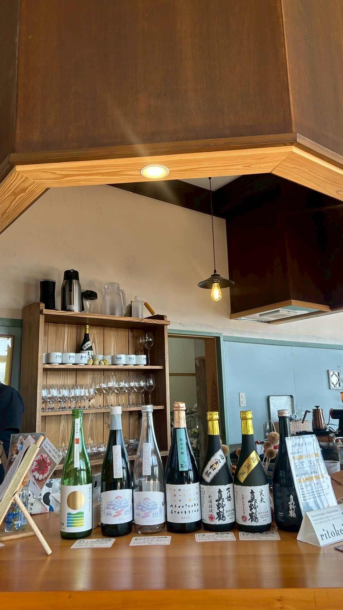
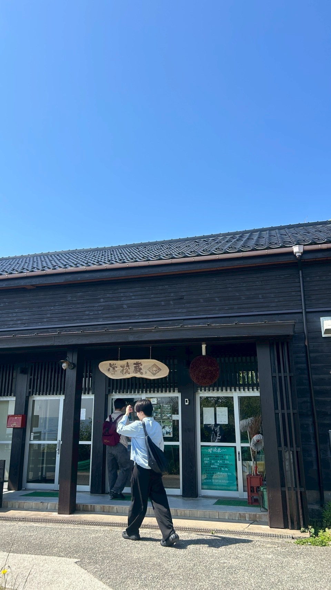
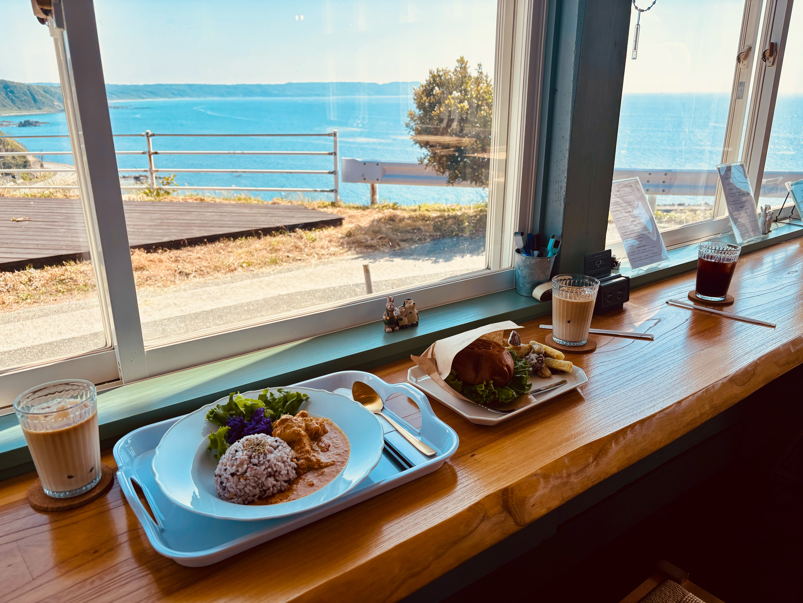
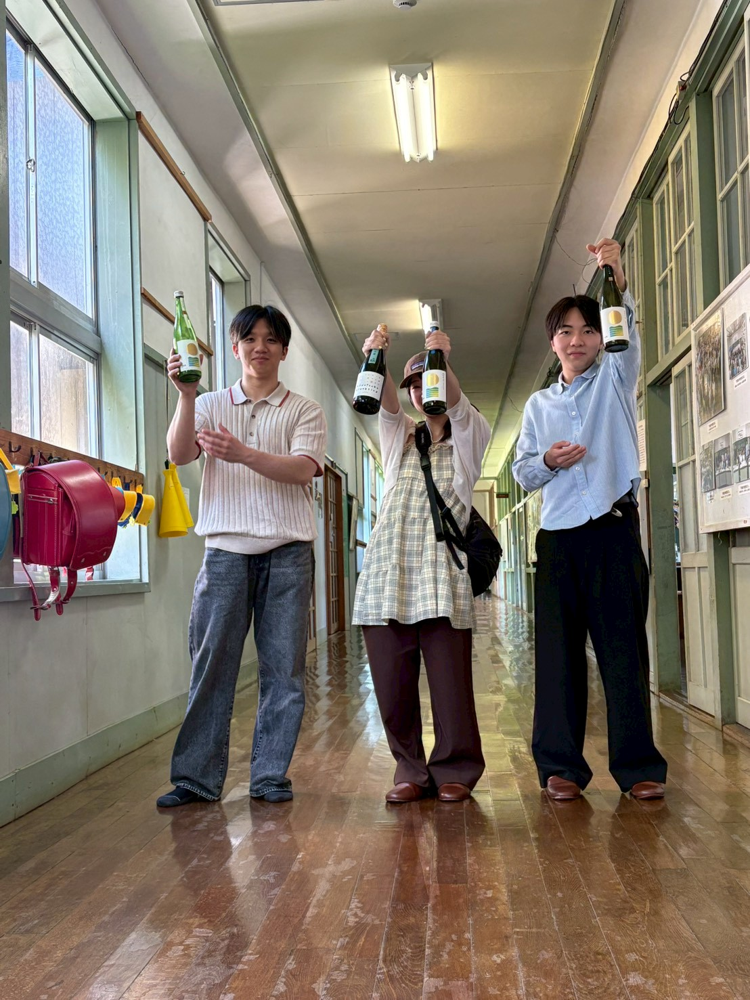

01 / HAIKO
學校藏。旧い校舎の奥へ。
旧西三川小学校を再生した酒蔵。フォルダ名の haiko は廃校の読みとして、この場所の記憶に対応する。







NOTE
木造校舎、酒蔵、教室の気配がひとつながりに残る場所。今回のルートでは両津港の次に向かった主役スポット。
旧西三川小学校を再生した酒蔵。フォルダ名の haiko は廃校の読みとして、この場所の記憶に対応する。




木造校舎、酒蔵、教室の気配がひとつながりに残る場所。今回のルートでは両津港の次に向かった主役スポット。